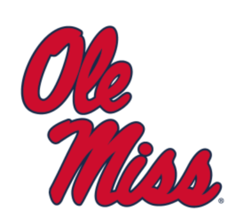

Stephen Chavez's Portfolio
Education
Master of Business Administraction (MBA) | 2021
University of Memphis ｜ Memphis, Tennessee
Focus: Web Analytics, Graduated Summa Cum Laude, Member- Chancellor's List/Dean's List

Bachelor of Arts, Public Policy Leadership | 2018
University of Mississippi ｜ Oxford, Mississippi
Minor: English, Graduated Cum Laude, Member – Chancellor’s List/Dean’s List, Luckyday Scholar, United States Senate Page.
Experience
Professional Business System Analyst
Corelogic | Oxford, MS | 2022 - Present
System Analyst
DHL Supply Chain and Logistics | Memphis, TN | 2021 - 2022
Web Developer
Banded Beast | Hernando, MS | 2020 - 2022
Campaign Manager
Hernando Mayoral Re-Election Campaign | Hernando, MS | 2020 - 2021
Data Director / Deputy Campaign Manager
West Virginia Governor's Campaign | Charleston, WV | 2019 - 2020
Campaign Manager
MS House District 28 Campaign | DeSoto County, MS | 2019 - 2021
College Outreach Coordinator / Regional Political Director
MS Lieutenant Governor Campaign | Northwest, MS | 2019
Data Director/Regional Political Director
MS Secretary of State Campaign | Jackson, MS | 2019
| Coordination & Logistics | Project Management & Support | Strategy & Execution |
| Microsoft Excel | Resourse Allocation | Business Relationships |
| SQL, CSS, HTML5 | Business Process Improvement | Risk Management |
| PowerBI & Tableau | Database Management Systems | Documentation & Reporting |
Publications
Lobbying and Social Policy
Springer Encyclopedia of Public Policy
August 2017

Drug Shortages in America
Mississippi Political Review
February 2018

Christ in Job & Career
Daily Devotions for Christians at Work
November 2017

Projects
Here are a couple of video's I created. From compiling video, editing, creating script, and putting the finished project together. I also created the targeted ad group to boost the campaign videos!


While working on campaigns, I created countless campaign material from doorhangers, to political signs, to mailers, and many more. Below is some of that artwork of which I created the design, wording, and the target universes to determine who would receive each piece.
Click each picture for a closer look!!


As a Campaign Data Director, I was not only in charge of handeling the campaigns data systems but was also responsible for creating reports and tracking campaign staff progress. Below is an example of an Excel sheet I created that would help to track campaign progress and would be shared with candidate, consultant, and other campaign stakeholders.

Using Twitter API and collecting twitter data, I worked with a partner to collect twitter data and AWS EMR. We searched tweets associated with the 2018 MLB World Series to see if Tweet frequency could be used to predict the winner of the 2018 World Series. We examined the data to confirm its value for analysis and then used Jupyter notebooks, Tableau, sentiment analysis, NLP techniques, and multiple other techniques/strategies to create a PowerPoint presentation and video for the class.

In this project, I analyzed data and created visuals in Tableau to create a presentation to present the data.

Certifications
Project Management Foundations | April 2022
Project Management Institution (PMI)
Scrum: The Basics
Project Management Institution (PMI)
Google Analytics Individual Qualification
Google Analytics Academy | Completion ID: 74877917
Advanced Google Analytics
Google Analytics Academy